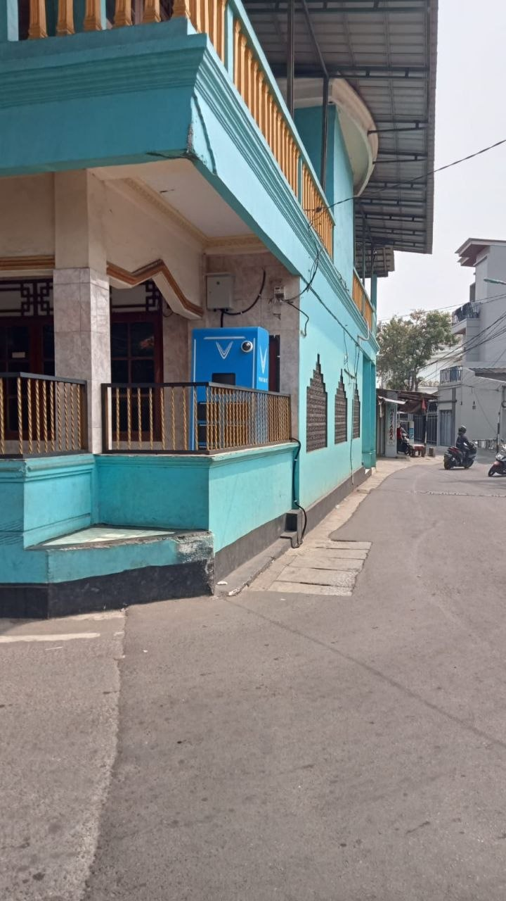

Tambahan kas Rp 5.000.000/tahun bersih, dibayarkan di depan.
Mesin BSS (Stasiun Penukaran Baterai Motor Listrik), instalasi kabel, hingga pulsa token listrik bulanan 100% ditanggung oleh perusahaan.
Hanya membutuhkan sudut teras/halaman berukuran 1 x 1,5 meter.

Amankan slot untuk masjid Anda sebelum kuota di area Anda penuh.
Cek Syarat & Ajukan Teras Sekarang 🚀Anda akan diarahkan langsung ke WhatsApp admin pusat Power of Masjid.